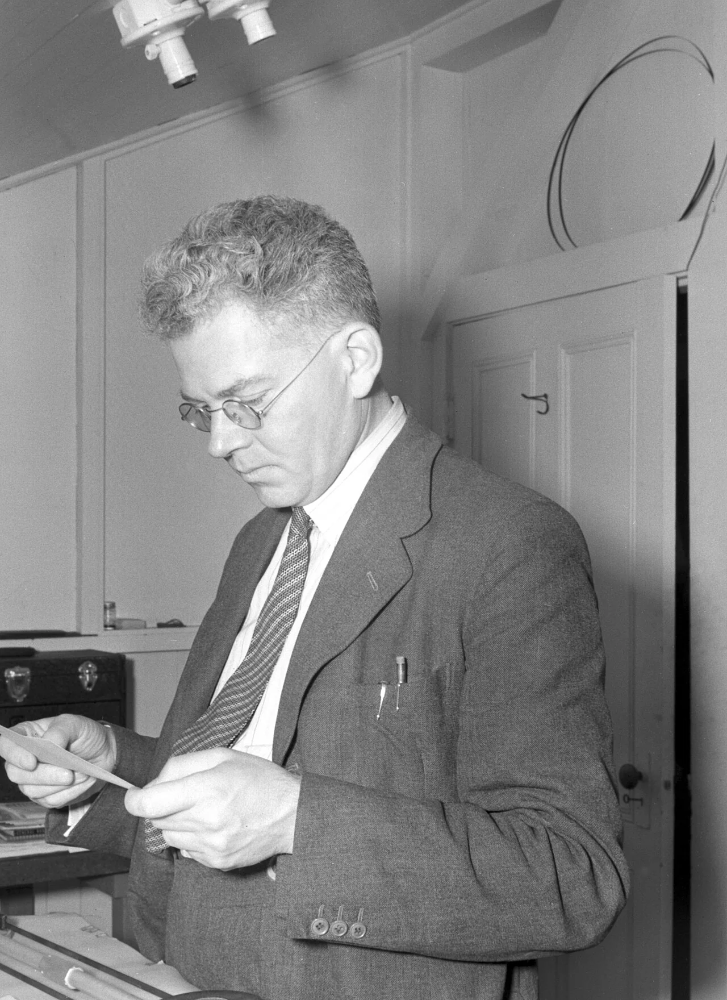
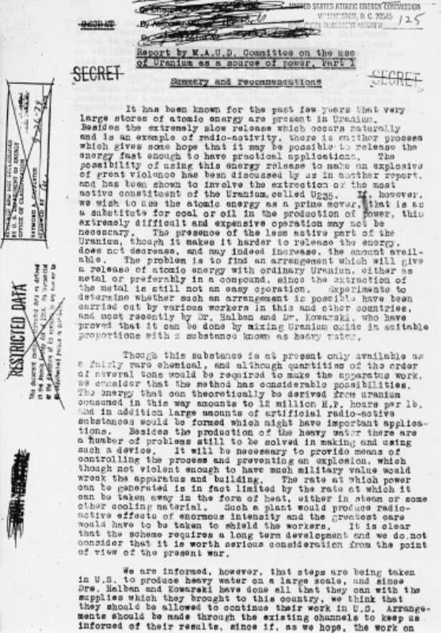

Nuclear History · 080
"Maud Ray Kent": The Cryptic Telegram Behind Britain's MAUD Committee Report (1941)
A puzzling telegram gave a secret committee its name; fifteen months later its reports, after a detour through a Washington safe by one participant's account, helped push America toward the bomb project.
In April 1940 a British committee of top physicists began asking whether a uranium bomb was possible, and it took its name from a puzzling line in a telegram: "Maud Ray Kent". Fifteen months later its two reports concluded that a bomb was practicable and a power reactor possible but long-term. Carried across the Atlantic, in part by Mark Oliphant in person, the findings helped push the United States from slow research toward an urgent effort.
A telegram with a puzzling last line
"Tell Cockcroft and Maud Ray Kent."
On 9 April 1940, the refugee physicist Otto Frisch (1904–1979), working in Birmingham, England, received a telegram that ended with that line. That same day German troops crossed into Denmark. The telegram brought news of Niels Bohr (1885–1962) in occupied Copenhagen, but its last sentence was puzzling. Cockcroft was obvious enough: John Cockcroft, the Cambridge physicist. But who, or what, was "Maud Ray Kent"? That riddle ended up giving its name to one of the most consequential committees of the Second World War. [1] [7]
A committee born from a calculation
A month earlier, in March 1940, Frisch and Rudolf Peierls had written a short memorandum in the Birmingham laboratory of Mark Oliphant (1901–2000). Natural uranium might be hopeless, they argued, but if you could separate out the rare isotope uranium-235, a surprisingly small amount might make a bomb. Oliphant passed the memo to the government's scientific adviser Henry Tizard, and Britain moved quickly.
On 10 April 1940 a new committee met for the first time in the Royal Society's rooms at Burlington House in London. Its chairman was George Paget Thomson (1892–1975), winner of the 1937 Nobel Prize in Physics, and its first members were James Chadwick, John Cockcroft, Mark Oliphant and Philip Moon. At first it was simply the "Thomson Committee". Ironically, Frisch and Peierls themselves were kept off the main committee because they counted as "enemy aliens"; they joined a technical subcommittee later that year. [7] [4]
A code word that wasn't
A strange phrase arriving from a country overrun that very day seemed bound to hide something. Cockcroft wondered whether MAUD RAY KENT might be a scrambled version of "radium taken" — a warning, perhaps, that Germany was grabbing radium for uranium research. The committee borrowed the first word as its cover name, and so the MAUD Committee was born.
The truth came out much later, around 1943, after Bohr himself escaped to Britain. Maud Ray was an Englishwoman who had worked for the Bohr family, and Kent was simply where she lived. Bohr had only asked Frisch to pass on his regards. Many accounts describe her as a former governess to Bohr's children; others call her the family's housekeeper. Sources also differ on whether the telegram came straight from Bohr or was relayed through Lise Meitner. One more myth to clear up: the popular expansion "Military Application of Uranium Detonation" was invented after the fact. The four letters never stood for anything. [1] [3] [4] [7]
![Two-lane timeline from March 1940 to October 1941. The Britain lane shows the Frisch-Peierls memo, the Maud Ray Kent telegram and first meeting, approval of the two reports on 15 July 1941 and Churchill's minute of 30 August 1941. The USA lane shows the Tizard Mission in September 1940, Bush receiving the draft in July 1941, Oliphant's visit in late August to September 1941, and Conant's final copy and Bush's briefing of Roosevelt on 3 and 9 October 1941. A dashed arrow crosses the Atlantic band from the approved reports to Bush.](../../assets/images/history/080-maud-report/fig1-two-lane-timeline.webp)
Fifteen months, two reports
The name was an accident, but the work was serious. Chadwick's team in Liverpool measured how readily uranium nuclei split, a team in Oxford worked on separating uranium-235 by gaseous diffusion, and in Cambridge Hans von Halban and Lew Kowarski, who had escaped from France, ran heavy-water experiments. All this went on while air battles raged over Britain.
In July 1941 the committee finalised two reports. The approval date is usually given as 15 July, though sources differ. The first, "Use of Uranium for a Bomb", opens with refreshing honesty: "we entered the project with more skepticism than belief." Its conclusion was blunt: "We have now reached the conclusion that it will be possible to make an effective uranium bomb." By the estimates of the day, about 25 lb (roughly 11 kg) of uranium-235 would equal 1,800 tons of TNT; the material for a first bomb could be ready "by the end of 1943", about two years away; and a large gaseous diffusion plant would be needed. The committee recommended that the work "be continued on the highest priority" and that collaboration with America "be continued and extended." [2] [1]
The second report, "Use of Uranium as a Source of Power", agreed that a reactor using natural uranium and heavy water could release energy, but judged it a long-term project, not one for the present war. The road to nuclear power was already on paper. The reports also rated other routes, such as plutonium, as unpromising — paths the Americans would later pursue anyway. [1] [7]
![Comparison of the two MAUD reports of July 1941. Report 1, Use of Uranium for a Bomb: about 25 lb, roughly 11 kg, equal to 1,800 tons of TNT by the 1941 estimate, material ready by the end of 1943, a large gaseous diffusion plant, highest priority and wider collaboration with the US. Report 2, Use of Uranium as a Source of Power: natural uranium with heavy water can release energy, a long-term project, Halban and Kowarski to continue in the US. A strip lists routes rated low: plutonium, electromagnetic, centrifuge and thermal diffusion.](../../assets/images/history/080-maud-report/fig2-two-reports.webp)
A report in a safe, and a physicist on a plane
A draft reached Vannevar Bush in July 1941 through the London liaison office of the US National Defense Research Committee (NDRC). The response was lukewarm. In late August, Oliphant flew across the Atlantic, officially to discuss radar. In Washington, as he later recalled, he found that Lyman Briggs, head of the Uranium Committee, "had put the reports in his safe and had not shown them to members of his committee." That is Oliphant's view, of course; peacetime American caution and secrecy rules were also part of the picture. [1] [4]
Oliphant spoke of a "bomb" in no uncertain terms, then went to Berkeley and won over Ernest Lawrence, who in turn stirred up his colleagues. On 3 October 1941 James Conant received the final report from Thomson, and on 9 October Bush briefed President Roosevelt, who approved a faster research and development effort. The story of the decisions around Pearl Harbor is one for another day. [7] [6]

Britain goes "Tube Alloys"
London acted too. On 30 August 1941 Winston Churchill wrote to his chiefs of staff: "Although personally I am quite content with the existing explosives, I feel we must not stand in the path of improvement." The chiefs recommended "immediate action with the maximum priority", and a project with a deliberately dull cover name, Tube Alloys, was launched. Less happily, the MAUD material also reached Moscow through John Cairncross, one of the "Cambridge Five" spies. [5] [7]
Margaret Gowing, Britain's official historian of the project, judged that without MAUD the American effort would have started months later, adding that "events that change a time scale by only a few months can nevertheless change history." A committee named after a polite greeting had helped start an enterprise on the other side of the ocean. [8] [7]
